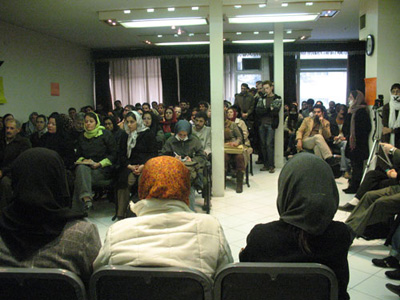

|
|
|
Browsing
Contact Us |
Campaigners |
Face to Face |
Tribune |
Interview |
News |
On the Web |
One Million |
Report
Farsi | Français | German | Italian | Spanish | العربية Also in this section
|
 A report on the protest meeting at the Association of Journalists Writing About Discriminatory Laws Does Not Constitute Disruption of Public OpinionBy: Aida Saadat and Maryam Malek; Translation by: SZ Thursday 24 January 2008 Change for Equality: The Association of Journalists was host to a large group of the representatives of the press and publications and members of the One Million Signatures Campaign as well as journalists and social, cultural and political activists on December 13th, 2007. They had all gathered to protest the arrests of Maryam Hosseinkhah and Jelve Javaheri. It’s been a month since the arrest of Maryam and two weeks since the arrest of Jelve. This meeting was held at the request of a number of journalists who are members of the Association of Journalists to protest the threats posed to the professional security of journalists as well as actions taken against women activists by the security and judicial authorities. Even though this meeting had been called to defend the journalistic rights of these two journalists and bloggers, the presence of a large crowd comprising a wide spectrum of journalists, social, cultural, political, students and human rights groups as well as the attorneys of journalists, women’s movement activists and the families of Maryam Hosseinkhah and Jelve Javaheri, made this into one of the most exciting meetings of the Association of Journalists in recent times. The walls of the assembly hall of the Association of Journalists were covered with posters of Maryam Hosseinkhah, Jelve Javaheri and the deceased journalist Mariam Nourbakhsh. The walls were also covered with slogans protesting the continued detention of Maryam Hosseinkhah and Jelve Javaheri. "What are the women journalists guilty of?" "Disrupting public opinion or enlightening it?" "Wasn’t censorship of words enough? Now they are trying to eliminate people who fight for their rights." "Writing about discriminatory laws does not constitute disruption of public opinion." Those were some of the slogans on the walls of the Association of Journalists that caught one’s eyes. An interesting initiative of the artistic committee of the One Million Signatures Campaign was the creation of masks with a black X inscribed on them in protest to the detention of their friends. These masks drew the attention of many present at the event. The masks received so much attention that even some of the guests, following the lead of the artistic committee members, started wearing them on their faces. The number of people present at the event was growing by the moment, to the point that in addition to the main assembly hall, the lobbies were filled with people who had eagerly come to this meeting and participated in the event until the end. What follows is a report on some of the speeches given at this event. Gohar Bayat: "Maryam and Jelve worked for our children and struggled for our daughters’ civil rights." Shahab Mirzai who is Maryam Hosseinkhah’s husband, Gohar Bayat who is Jelve Javaheri’s mother and Kave Mozafari who is Jelve’s husband gave speeches during the event and protested the unlawful continued detention of Maryam Hosseinkhah and Jelve Javaheri. Shahab Mirzai, Maryam Hosseinkhah’s husband, emphasizing the fact that all of the people attending the event were aware of the latest update on Maryam Hosseinkhah’s situation in prison, recited a poem written by one of Maryam’s friends. Gohar Bayat, Jelveh Javaheri’s mother also talked about the detention of her daughter and Maryam Hosseinkhah. She said: "Mariam is a journalist and Jelve is a researcher in the field of women’s issues. They are both social activists, young people who are in prison. They struggled for women’s rights. Aren’t men nurtured in the bosom of women to climb to a high status? I, being a woman myself, see that there are thousands of problems and our rights are not respected. So, how do they want us to nurture and bring up our children? Jelve and Maryam worked for our children and struggled for the social rights of our daughters. These young people should be supported instead of being sent to prison." Kave Mozaffari: "I want you to be our jury." As the event continued, Kave Mozaffari, Jelveh Javaheri’s husband addressed the audience and said: "I want you to be our jury. You tell me, which national security did Jelve jeopardize? This is the Jelve who struggled for the security of the women of this country. Whose security has she jeopardized? Doesn’t our national security include the security of the women of our country?" Kave continued by expressing his dissatisfaction with the lack of accountability and the absence of any clear plans to investigate the detention of his wife, adding: "The fact that I don’t even know the judge’s name or who the prosecutor is makes me angry. I object to these discrepancies, but one cannot object to anything here. One can only defend. Kave reminded the audience of what the chief of the Judiciary had said some time ago regarding keeping citizens in custody and added: "I guess it applies to certain people and not to us. I want to defend our minimum rights. Since the main argument here is conviction and not acquittal, I want to say what Jelve hasn’t done anything wrong. Jelveh hasn’t picked up a gun yet. She hasn’t even held a knife in her hand to threaten anyone yet. Jelve hasn’t had the intention of overthrowing the regime yet. She hasn’t stolen, and she hasn’t climbed a wall. She hasn’t received any money from a spy yet…. She hasn’t received any money from the hegemonic America. She hasn’t done any of these strange things…..But she has written. She has talked to the women of this country. She has talked to them to bring them security. Jelve has written articles and reports, she has translated, and she has researched and has at times wept for the women of this country. I don’t know why I have to defend her, but one cannot cross the red lines here. One cannot talk about rights. Maybe some people think that we are attacking them….no, these things that I am saying are only the bare minimum. I want to defend these minimum rights. I want to say that we have the right to be alive and we will struggle for this right. We will fight for this right and we will pay the price." Mozaffari ended his speech by thanking the association of Journalists for providing a forum for discussing these matters when no other opportunities for discussion existed. Somayeh Farid and Sara Loghmani, two of the friends of Jelve Javaheri and Maryam Hosseinkhah followed by reading the reports of these two women’s rights activists from the prison. Read Maryam’s Reports: Women at Evin: Victims of Marriage at a Young Age Read Jelve’s Report: The Sorrowful Tales of Women at Evin Prison Parvin Bakhtiari-Nejad: "Detention of a few women will not solve any of your multitudes of problems." Parvin Bakhtiari-Nejad, a women’s rights activist and journalist, expressing her sorrow regarding the detention of Maryam Hosseinkhah and Jelve Javaheri, said: "The demands for change have always been met with confrontation by the ones who fear change. One cannot think of any changes that have taken place in any arena without the conflicts associated with them. In contrast to the insistence of some to keep the status quo are the endeavors, sacrifices and selflessness of people like Maryam Hosseinkhah and Jelve Javaheri. People like Maryam and Jelve open the way to brighter horizons which can only be reached by changing the status quo. Emphasizing the women’s one hundred year struggle to change the laws, she pointed to the history of the protest of women at the advent of Islam and said: "It seems as if our voice, our protests and our persistent struggles which have gone on for many years are something new to men." She then continued: "But it might be interesting to know that approximately 1400 years ago, at the time when Mohammad’s message of unity and justice was disseminated all over Mecca and Medina, Moslem women staged their first civil protest. In protest to Hazrat Mohammad, they asked why the Quran only talked about men and there was no mention of women. There was then an afflatus that said that without a doubt God had prepared great rewards for Moslem men and women who were believers and were obedient, honest, patient and humble and those who fasted and were virtuous and those who thought of God frequently….. Many complaints of domestic violence were brought to the prophet and he could not and did not do anything other than to defend women." Mohammad Sharif: "Why don’t you comply with human rights treaties?" The next speaker at the Association of journalists’ meeting was Mohammad Sharif, a lawyer and a law expert who is a professor at the Allameh Tabatabai University. Emphasizing that social activists pay the highest price in regard to human rights, Sharif said: "A treaty is a covenant which countries join by signing a document which in turn obligates them to enforce it. We always ask the government to implement the human rights standards. In other words, we ask the government: "Why don’t you comply with human rights treaties?" A treaty creates rights for governments and alongside that it also creates obligations. Human rights treaties are absolute obligations. Governments are the principal suspects of violations of human rights. It is very important to know that governments are the main culprits of violating human rights. Therefore, we cannot address the main culprits of human rights in the same manner that we would confront a signatory to a contract. There are times when a government does not have the capacity to implement human rights and civil rights, such as the government of Bosnia-Herzegovina vis-à-vis the Serbs or Afghanistan vis-à-vis the Taliban. Sometimes when natural disasters such as floods and earthquakes strike, governments may lack the ability to fully implement human rights, but these are exceptions. The governments that violate human rights are the culprits, the exceptions aren’t. So, the terminology and texts of these documents which we read are on paper but the reality of them is what is actually happening in our society, the reality is not what’s on paper. It seems that we are embroiled in a delusion. We have to bear in mind that the reality is in the society, not on paper. Extracting the meaning of the articles of these treaties from what’s written on paper is not a mere joke. What we see is these (pointing to pictures of Maryam and Jelve). This is what’s happening in prisons and it cannot be taken lightly. How do states, as the main culprits of violation of human rights, deal with these treaties? Governments ratify these documents and are obligated to implement them." In concluding his speech Sharif said: "Another important factor that strengthens the position of oppressive governments is the UN Human Rights Commission. The UN Human Rights Commission -may its soul rest in peace- was replaced with the UN Human Rights Council. Why did the UN Human Rights Commission have such a disastrous fate? The UN Human Rights Council apparently does the same things as the Commission did. Thinking about this fact ought to be enough to convince us that we need to clarify our position in regard to the deceiving lexicon of human rights documents." Nasrin Sotoudeh: "The amount of bail needs to be proportionate with the severity of the crime, the social status of the accused or the probability of the accused jumping bail." During this event, Zohreh Arzani - Jelve Javaheri’s attorney - who was also one of the organizers of the ceremony and who served as a facilitator of the event, provided a brief report on the legal status of her client’s case and said that she hasn’t been allowed to examine her client’s file yet. She then invited her colleague Nasrin Sotoudeh to talk about the legal status of Maryam’s case which is similar to Jelve’s case. Sotoudeh presented details about the legal status of her client indicating that in all cases of prosecution of activists in different fronts, there is one common illegal trend: "The amount of bail needs to be proportionate with the severity of the crime, the status of the accused in the society or the probability of the accused jumping bail. When illegally prosecuting these individuals, bail is set extremely high. The high amount of the bail is not proportionate with the status of the accused in the society or the type of crime they are accused of. In a case that I am representing, in a domestic rape case which had resulted in the birth of an illegitimate child, the provincial criminal court had set bail at 1,000,000 Rials (roughly $1100). Meanwhile, our friends who appear in court as defendants are accused of crimes which are portrayed to be much more serious than voluntary manslaughter and their bail is set to a minimum of 1,000,000,000 Rials (roughly $110,000) and in some cases the bail has even be set as high as 8,000,000,000 Rials (roughly $880,000)." Sotoudeh then talked about the emphasis of the law on requiring the existence of adequate evidence to arrest suspects: "In illegal practices which are prevalent in dealing with these activists, first they come up with an accusation for those individuals. Then they arrest them and hold them in quarantine-like conditions in prison so that no one, including their family or their attorney, has access to them. They then start their investigation to gather evidence. In one case, the case of a man who is a women’s movement activist and has been arrested for this reason, the prosecutor has asked for collection of evidence and has ordered that the man be secretly put under surveillance and if any breaches of morality are observed, they be reported to him. How is it that they arrest someone for taking part in a social movement and then want breaches of morality be reported to them? In fact, breaches of morality are supposed to be dealt with at the Revolutionary Court. Please bear in mind that criminal justice laws clearly prohibit the judges from gathering evidence on moral issues - which our present laws refer to as anti-chastity crimes - unless a specific private complaint is filed. What message do these actions give us? The philosophy behind punishment is that it should be something that deters potential criminals from committing the crime." Shahla Lahiji: "Even in prison, Maryam Hosseinkhah is preoccupied with setting up a library for women prisoners." The next speaker of the event, Shahla Lahiji, started her speech this way: "When we were running in the alleys of the Revolution, our hope was that whatever regime that gained control of our society would be something better, something more humane and something beyond what we already had. Should we now cry because we even lost what we already had? What is the crime of our friends who are in prison? What did they do other than criticize the laws that should be abolished? Times don’t stand still and we move forward. The laws of 100 years ago are not relevant today, in the same way that our life today is not what it used to be 100 years ago. This is the most basic, the most natural, the smallest, and the bare minimum of the demands of the society, the demands of women and men. Not only are the number of men present here an expression of this demand, but life itself expresses this fact. If the wife is one side of the equation, the daughter is the other side. If our daughter was the victim of an injustice we would be enraged. Should someone who has chosen the most basic form of expression to state her demands be treated like this? These activists have only asked the people if they want the laws changed so that they can convey their demands to the legislators. Just imagine, if this causes commotion in our society, then we are better off dead! If we are so paranoid that we don’t even want to hear other people’s views, then let us become the inhabitants of the city of the dead and the city of silence. No! They have to understand that they cannot maintain the status quo. How long can our friends symbolically cover their mouths with duct tape and say that they will not talk about these matters? I warn the people who think that they can silence the society to be afraid of a silenced society. We remember our dear friends Maryam Hosseinkhah and Jelve Javaheri. Maryam Hosseinkhah, even in prison, was thinking about books. The first thing that she did there was to initiate setting up a library for women prisoners." Asieh Amini: "Women’s rights activists today are themselves victims of women’s rights violations." Asieh Amini, journalist and women’s rights activist, also started her speech by thanking the Association of Journalists. She said: "This association is the only association nowadays that at least has a small auditorium for our gatherings so that we can get together here once in a while to remember our esteemed imprisoned friends. Amini continued her speech by saying: "Today, exactly the day we have gathered here to talk about Maryam Hosseinkhah and our other dear friend Jelve Javaheri, is the anniversary of the day four years ago on December 13, 2003, when the heads of states got together in Switzerland to sign a treaty to expand the information community in today’s world. After reading articles 1, 4 and 12 of this treaty and article 19 of the International Declaration of Human rights, she said: "Nowadays no trade union or professional association supports civil and social rights activists. Unfortunately we live under conditions where trade union and professional association activists, social and civil rights activists and human rights defenders are themselves victims of human rights violations. Defenders of women’s rights are today the victims of the violation of women’s rights. I call upon all the people who consider themselves defenders of women’s rights to take steps towards establishing an independent organization free of any interference from any government organizations which distort our message. In truth, maybe the fact that you don’t see Jelve Javaheri’s name next to Maryam Hosseinkhah’s name on the invitations that each and every one of you received to attend this event is a testament to what I am trying to say*." This journalist and human rights activist continued: "Our country is a signatory to this treaty. Signing this treaty obligates the government to guarantee that the information community empowers women and ensures their full and equal participation in all dominant social arenas and makes use of information and communication technologies to achieve these goals. I ask you to judge fairly. Is what the government doing to us today an appropriate response to this international treaty? Shouldn’t we call upon the parties responsible for implementing this international treaty to give us and their other compatriots a suitable explanation? They should explain why two women who have done nothing except abiding by the treaty that our country and the government have promised the world to implement have to be in prison today. And of course we don’t know which one of the defenders of women’s rights will be arrested tomorrow." Jila Baniyaghoob: "Maryam and Jelve are symbols of moderation, both in their demands and in their social endeavors." The next speaker at he meeting of the Association of Journalists which took place in protest to the detention of Maryam Hosseinkhah and Jelve Javaheri was Jila Baniyaghoob, a journalist, a women’s rights activist and the person in charge of the Focus of Iranian Women website who started her speech this way: "I want to tell you about Maryam, Jelve and Mariam. All three are women, all three are journalists, and all three are middle class women, perhaps lower middle class. I’ll start with Mariam Nourbaksh who is no longer among us. She was a social journalist covering women’s issues. She enthusiastically attended most of the civil movement events, especially those focusing on women’s and students’ issues. She was a very low-paid journalist whose pay wasn’t even enough for her taxi fares. It was only a few weeks ago that I was talking to her. I knew that after ten years of being in journalism, she was still not officially employed by any newspaper and had no health insurance. I asked her how much she made. With her usual innocence she said it was not too bad. She said that she made between 30 to 50 thousand Tomans per month (roughly $33-55) while working for the last publication that she wrote for, but well, even that publication was shut down." "And these days I ask myself whether these people who have set a bail in the amount of 1,000,000,000 Rials (roughly $110,000) for Maryam Hosseinkhah and Jelve are really aware of what the incomes of Maryam as a journalist and Jelve as a blogger are. Or I wonder about the doctor at the medical unit of Ward 209 of the Evin Prison who was saying that he was sure that journalists who work for reformist or non-government newspapers receive dollars from abroad. As much as I tried to explain to him that it was not so, he would not be convinced. He kept saying that Kayhan had published documents proving this!" Baniyaghoob continued her speech by pointing out that Maryam and Jelve were symbols of moderation in both their demands and social endeavors: "If moderate individuals like Maryam and Jelve do not have the right to be activists, then who does? What message does the intelligence-judicial system want to give by detaining moderate activists? What do they want to achieve?! Do they want to do whatever they can to drive the moderate social activists to become more radical so that they can have the proper excuse to oppress them in a big way? But fortunately the actions of the women’s movement activists during the last year have demonstrated that they do not engage in reactionary behaviors and will not be radicalized in reaction to the harsh behavior of certain elements in the government and will continue with their civil movement regardless." Bahareh Hedayat, secretary-general of Women’s Commission of Office to Foster Unity: Remembering the detainees Bahareh Hedayat, secretary-general of Women’s Commission of Office to Foster Unity, despite being ill agreed to give a short speech about the detainees: "I will name some students, particularly female students who are in detention at the present time. Ms. Sepideh Pouraghai, Nasim Soltanbaygi, Anousheh Azadfar and Alnaz Jamshidi are being detained. In addition, last night we received word that another girl has been arrested in Mazandaran. And of course, women’s rights activists Hana Abdi, Roonak Safarzadeh, Maryam Hosseinkhah and Jelve Javaheri are also in prison. The Office to Foster Unity and its Women’s Commission have issued two separate statements condemning their detention and the imprisonment of leftist students. And I must emphasize here that despite distinct and unchangeable ideological and operational barriers that separate us from this group, we strongly condemn their detention. Our main ideals are definitely human rights and freedom of speech. We struggle for these two ideals and we want and demand these rights for all the civil rights activists in our society." She then continued: "The arrests of female students show that women’s activists in different arenas including the One Million Signatures Campaign have affected the women’s and students’ movements collectively and in doing so they have started a new branch of activism in non-government print and internet media. But unfortunately, the government, because of its oppressive policies, does not allow this new branch of activism to grow and blossom." She also said: "I would also like to remember the late Dr. Zahra Baniyaghoob because of the double injustices done to her family. The verdict issued in this case, lack of follow up in the case and all the unanswered questions involving this case are the epitome and symbol of injustices done to women in our society." In continuing her speech Bahareh Hedayat enumerated the activities of Maryam Hosseinkhah and Jelve Javaheri and said: "As the secretary-general of the Women’s Commission of the Office to Foster Unity, I extol these two women for all they’ve done. I knew these two dear friends. They were very honest and open in what they did. Their whole preoccupation has been moving the One Million Signatures Campaign forward. And it is very appropriate for us to remember this social movement too. We should not forget the effectiveness and fruitfulness of the One Million Signatures Campaign. And it would probably be best if once and forever, the judicial and intelligence authorities would clearly state their problem with the One Million Signatures Campaign so that maybe we could find a solution to these problems." Farkhondeh Ehtesabian: "If this is justice, what then is injustice?" Farkhondeh Ehtesabian, a member of the Mothers’ Committee of the One Million Signatures Campaign and also a member of a group named Mothers for Peace, while condemning the detention of Maryam Hosseinkhah and Jelveh Javaheri read a statement issued by her group. In a part of the statement it is stated that, using the excuse of jeopardizing national security, the government cannot force students, teachers, intellectuals, journalists, artists, workers, women and men, etc. and all the peace-loving justice-demanding people regardless of religion or ethnicity to remain silent and not demand their rights. Mansoureh Shojai, a women’s rights activist, pointed out that the government has targeted the newly-weds of the Campaign this time. She also talked about the initiatives and endeavors of Maryam Hosseinkhah and Jelve Javaheri while in detention, in setting up a library, in line with the ideals of the Campaign, for women in prison as well as establishing an assistance fund for women prisoners and struggling to improve the conditions for women prisoners. Farideh Ghaeb also talked about the professional hazards of being a female journalist in the Islamic Republic. Mahboube Hosseinzadeh also talked about journalistic activities in regards to changing the laws and the One Million Signatures Campaign. The full text of the speeches of these friends will also be published in the near future. The meeting was adjourned after the speeches by Issa Saharkhiz, a member of the Organization in Defense of the Freedom of the Press and Rajab-Ali Mazroui, the secretary-general of the Association of Journalists. *Note: While this event was held in support of both Maryam and Jelve, the official invitations for this event included only the name of Maryam Hosseinkhah, because she is a member of the Association of Journalists and the Association does not recognize bloggers and internet-based writers as journalists qualified for membership. **Note: Maryam Hosseinkhah and Jelve Javaheri were arrested on November 18 and December 1, 2077 and released on January 2, 2008 on 5 Million Tomans bail (roughly $5500). To take a look at photos from this event as well as photos on and about the Campaign, visit the photo-blog of the Campaign, Images for Equality |